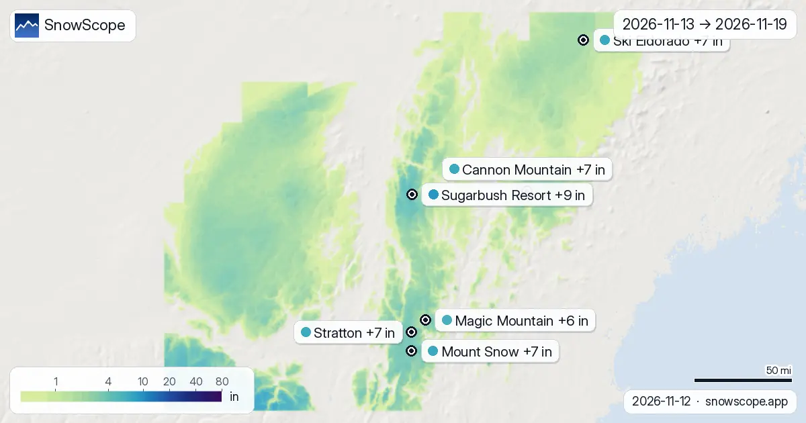
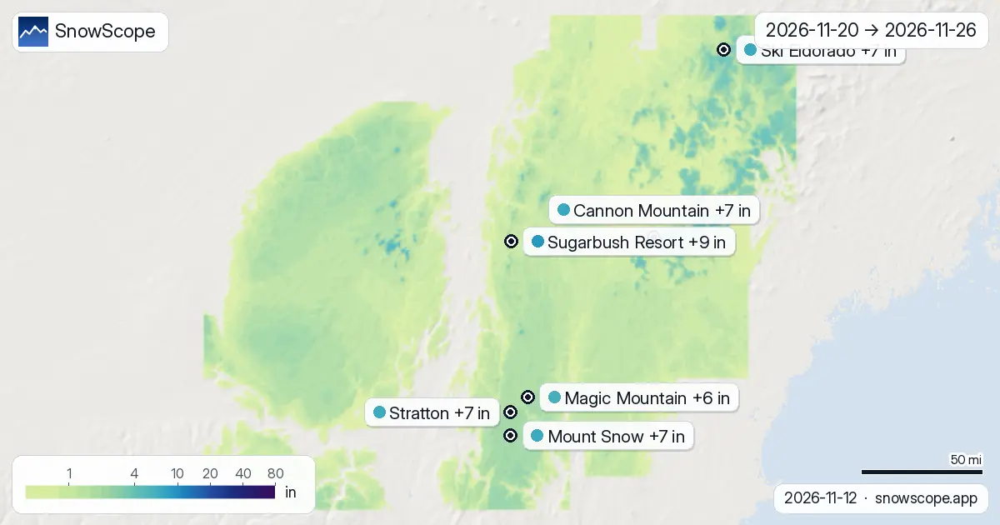

فين غادي يطيح التلج فشمال شرق ميريكان ف 14 يوم الجايين: Sugarbush Resort فالمقدمة ب 9 إنش
فين غادي يطيح التلج فشمال شرق ميريكان بين 13 نونبر و 26 نونبر، وشحال؟ سولنا جوج الموديلات العالمية اللي كيوصلو لجوج سيمانات، ECMWF و GFS، خلينا الوسط ديال الأجوبة ديالهم للخرائط، وكنكتبو شحال بعاد على بعضياتهم مع كل رقم لتحت. Sugarbush Resort خارجة فالمقدمة ب تقريبا 9 إنش (22 سم) ديال التلج الجديد فالعلو (4 إنش (9 سم) حتى ل 14 إنش (35 سم) بين جوج الموديلات)؛ Cannon Mountain من بعدها ب 7 إنش (19 سم). التلج فالجبال هو ما مخزون للربيع: اللي طاح دابا غادي يعمر الوديان والسدود من بعد.
شوف توقعات التلج مباشرة ديال Sugarbush Resort فالتطبيق ديال SnowScopeالعلو ديال التلج، التنبيهات والخريطة 3D، فابور.
محطة بمحطة، 14 يوم الجايين
ف Sugarbush Resort (ميريكان) جوج سيمانات كيجمعو تقريبا 9 إنش (22 سم) (4 إنش (9 سم) حتى ل 14 إنش (35 سم) حسب الموديل): 6 إنش (14 سم) حتى لآخر السيمانة اللولة، ومن بعد 3 إنش (8 سم) زيادة. علّم على 15 نونبر: هذاك هو أكبر نهار، ب 4 إنش (9 سم).
Cannon Mountain (ميريكان): تقريبا 7 إنش (19 سم) ف 14 يوم (2 إنش (5 سم) حتى ل 13 إنش (34 سم) بين الموديلات)، 4 إنش (9 سم) فالسيمانة اللولة و 4 إنش (10 سم) فالثانية. علّم على 26 نونبر: هذاك هو أكبر نهار، ب 3 إنش (7 سم)، من 2 أيام ب 5 سم ولا كثر.
ف Mount Snow (ميريكان) جوج سيمانات كيجمعو تقريبا 7 إنش (17 سم) (4 إنش (9 سم) حتى ل 9 إنش (24 سم) حسب الموديل): 4 إنش (10 سم) حتى لآخر السيمانة اللولة، ومن بعد 2 إنش (6 سم) زيادة. النهار اللي فيه التلج كثر هو 13 نونبر ب 4 إنش (9 سم)؛ 2 أيام كيجيبو 5 سم ولا كثر.
ف Ski Eldorado (كندا) جوج سيمانات كيجمعو تقريبا 7 إنش (17 سم) (2 إنش (6 سم) حتى ل 11 إنش (27 سم) حسب الموديل): 2 إنش (5 سم) حتى لآخر السيمانة اللولة، ومن بعد 4 إنش (11 سم) زيادة. علّم على 26 نونبر: هذاك هو أكبر نهار، ب 3 إنش (8 سم).
ف Stratton (ميريكان) جوج سيمانات كيجمعو تقريبا 7 إنش (17 سم) (4 إنش (9 سم) حتى ل 10 إنش (25 سم) حسب الموديل): 4 إنش (10 سم) حتى لآخر السيمانة اللولة، ومن بعد 3 إنش (7 سم) زيادة. علّم على 13 نونبر: هذاك هو أكبر نهار، ب 3 إنش (8 سم)، من 2 أيام ب 5 سم ولا كثر.
ف Magic Mountain (ميريكان) جوج سيمانات كيجمعو تقريبا 6 إنش (15 سم) (3 إنش (8 سم) حتى ل 8 إنش (21 سم) حسب الموديل): 4 إنش (9 سم) حتى لآخر السيمانة اللولة، ومن بعد 2 إنش (5 سم) زيادة. النهار اللي فيه التلج كثر هو 13 نونبر ب 3 إنش (8 سم)؛ 2 أيام كيجيبو 5 سم ولا كثر.
| المحطة | العلو ديال التلج | تلج جديد، 72 س | جاي، الأيام الجاية | الفوق |
|---|---|---|---|---|
| Sugarbush Resort | 1 إنش (2 سم) | 2 إنش (5 سم) | 4 إنش (10 سم) | 4062 قدم (1238 م) |
| Cannon Mountain | 0 إنش (0 سم) | 2 إنش (5 سم) | 4 إنش (9 سم) | 4039 قدم (1231 م) |
| Mount Snow | 1 إنش (3 سم) | 2 إنش (4 سم) | 4 إنش (11 سم) | 3586 قدم (1093 م) |
| Ski Eldorado | 0 إنش (0 سم) | 1 إنش (3 سم) | 2 إنش (4 سم) | 2917 قدم (889 م) |
| Stratton | 3 إنش (7 سم) | 3 إنش (8 سم) | 5 إنش (12 سم) | 3881 قدم (1183 م) |
| Magic Mountain | 0 إنش (0 سم) | 1 إنش (3 سم) | 4 إنش (10 سم) | 2851 قدم (869 م) |

التلج الجديد حسب العلو
طلع للفوق والأرقام كتتبدل. على أرض المنطقة، مجاميع جوج سيمانات حسب العلو هي: بين 3281 قدم (1000 م) و 4921 قدم (1500 م): عادة 6 إنش (15 سم)، والربع اللي فيه التلج كثر فهاد الطبقة 7 إنش (18 سم) ولا كثر.

الأيام اللي خاص تراقب
الأيام اللي خاص تعلّم عليهم، محسوبين على 104 محطة اللي كنتبعو فشمال شرق ميريكان: الجمعة 13 نونبر (18 من 104 محطة ب 5 سم ولا كثر، حتى ل 4 إنش (9 سم) ف Mount Snow) و الأربعاء 25 نونبر (12 من 104 محطة ب 5 سم ولا كثر، حتى ل 2 إنش (6 سم) ف Mount Snow).
السيمانة اللولة مقابل الثانية
بالسيمانة، اللولة (من 13 نونبر حتى ل 19 نونبر) فيها 53 % ديال التلج ديال جوج سيمانات فالمنطقة؛ والثانية (من 20 نونبر حتى ل 26 نونبر) فيها الباقي.
بكري: Sugarbush Resort، Mount Snow، Stratton و Magic Mountain غادي ياخدو أغلب التلج ديالهم فالسيمانة اللولة.
من بعد: ف Cannon Mountain و Ski Eldorado السيمانة الثانية كتجيب كثر من اللولة.
فالخريطة، تقريبا 397 ميل² (1027 كم²) ديال الجبال غادي ياخدو 20 سم ولا كثر فجوج سيمانات.
كيفاش تقرا الخرائط
شنو كتشوف: التلج الجديد المتوقع على الأرض الحقيقية ديال المنطقة، مجموع على جوج سيمانات فالخريطة اللولة وعلى كل سيمانة فجوج الأخرين. سلم الألوان من أثر صغير حتى لكميات كبيرة بزاف؛ كل علامة هي الجبل الفوقاني ديال محطة.
شحال تيق فيها: بزاف فالأيام القريبة، وشوية فالبعيدة. المجال من بعد كل رقم هو الفرق بين جوج الموديلات؛ فرق صغير يعني توقعات مضمونة، وفرق كبير يعني علامة استفهام. رجع غدا للمجموعة الجاية ديال الخرائط.
نصايح للي كيتزلجو
- التلج اللي كيطيح على قاعدة رقيقة خاصو شي أيام باش يتزلج مزيان: شوف حتى خرائط العلو قبل ما تسافر.
- علو 0 °C المتوقع يقدر يغلط بشي مئات ديال الميترات؛ عاود شوف الخريطة نهار قبل.
- قبل أي خرجة برا البيست ولا جولة، قرا النشرة الرسمية ديال الانهيارات (الروابط لتحت).
- التلج فالخريطة ماكيعنيش بلي المحطة محلولة: شوف التيليسييج والتواريخ فالموقع ديالها.
على هاد الأرقام
العلو ديال التلج فالمحطات هو أكثر تلج فالجهة الفوقانية حسب الموديل ديال التلج ديال SnowScope (تقريبا 1 كم، الحساب ديال 12 نونبر)؛ هادو تقديرات لمنطقة، ماشي قياس فنقطة وحدة. الأرقام ديال محطات القياس مقاسة فالتاريخ المكتوب. التوقعات يمكن تتبدل. ديما شوف النشرة الرسمية ديال الانهيارات قبل ما تخرج من البيست.
النشرات الرسمية ديال الانهيارات: Mount Washington Avalanche Center
كيفاش تستاشهد بهاد المقال
للبحث، التعليم ولا الصحافة: الأرقام والرسومات تقدر تعاود تخدم بيهم بحرية تحت CC BY 4.0 مع هاد الاستشهاد.
SnowScope (2026), فين غادي يطيح التلج فشمال شرق ميريكان ف 14 يوم الجايين: Sugarbush Resort فالمقدمة ب 9 إنش, https://snowscope.app/blog/ar/2026/11/us-northeast-2-week-snow-forecast-maps-12-november-2026.html, تشاف ف 2026-11-12
SnowScope (Atlas Labs). (2026, November 12). فين غادي يطيح التلج فشمال شرق ميريكان ف 14 يوم الجايين: Sugarbush Resort فالمقدمة ب 9 إنش. SnowScope snow reports. https://snowscope.app/blog/ar/2026/11/us-northeast-2-week-snow-forecast-maps-12-november-2026.html
BibTeX
@misc{snowscope2026usnortheast2weeksnowfore,
author = {{SnowScope (Atlas Labs)}},
title = {فين غادي يطيح التلج فشمال شرق ميريكان ف 14 يوم الجايين: Sugarbush Resort فالمقدمة ب 9 إنش},
year = {2026},
month = nov,
howpublished = {\url{https://snowscope.app/blog/ar/2026/11/us-northeast-2-week-snow-forecast-maps-12-november-2026.html}},
note = {Published 2026-11-12 18:27 UTC; accessed 2026-11-12}
}· CC BY 4.0 · الطريقة، الداتا والأدوات →
Sugarbush Resort: التلج والحرارة حسب العلو، هاد الشتا مقارنة مع اللي فاتت (الأدوات) →
تابع Sugarbush Resort
فابور: ميساج ملي يجي التلج، والتوقعات كل صباح.
تقارير أخرى ديال التلج

علو 0 °C فشمال شرق ميريكان، الأيام الجاية: 1936 قدم (590 م) حتى ل 6037 قدم (1840 م). أسخن الساعات: الحد ديال التلج تقريبا 984 قدم (300 م) تحت، حتى ل …

واش كاين تلج أكثر من هادي عام؟ قارنّا اليوم مع 12 نونبر ديال الشتا اللي فاتت ف 4 محطات فشمال شرق ميريكان: 0 منهم فيهم تلج أكثر دابا، حسب الموديل ديال …

الأرض البيضا تبدلت: 676 ميل² (1750 كم²) نهار 8 نونبر، 42 ميل² (110 كم²) اليوم، و 12668 ميل² (32810 كم²) متوقعة نهار 13 نونبر. من دابا حتى ل 13 نونبر …